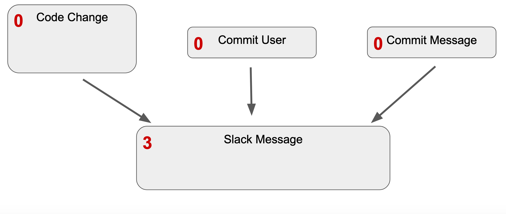

LosCat is a tool for source code monitoring developed by four students at Carleton College towards completion of their senior integrative exercise (colloquially known as "comps") for computer science. The aforementioned students are Anders Bruihler, Ari Conati, Sebastian Kimberk, and David White.
This webpage gives an outline of the tool, for more detailed documentation check out the documentation on our repo. You can also view a PDF of our final presentation.
Our Objective
The objective of LosCat is to be a tool that allows actions to be automatically run on user code in order to improve the code development process. This is intentionally vague, as we have written LosCat so that it can be easily extended and used in a variety of ways.

The tool monitors code in users' Github repositories by running "probes" that are written by the user (and held within their own repository). These "probes" make use of "modules" which are contained within the LosCat repository (which themselves are just bash scripts that are automatically populated).
Included Modules
We have written an assortment of modules for LosCat, which can be modified or added to by end users.
Slack Bot
The Slack Bot provides two modules slackBotSimple and slackBotBlocks to post messages to a Slack channel. These modules take in a channel (or member ID for direct messages) and message and will post to Slack. slackBotBlocks allows for Block-Kit formatted Slack messages. See the example probes for usage guidelines
Python Code Finder
Finds specific code blocks in Python code and outputs their location. Check out the repo documentation here for more information.
Grammar Fuzzer
Automated program fuzzing with input generated following a provided grammar definition (specified using the ANTLR4 format). Check out the repo documentation here for more information.
Implementation
Some brief details on how LosCat is implemented.
Custom Probe/Module Walkthrough
See documentation/probe_walkthrough.md for a walkthrough of creating a probe and associated modules.
Running Probes
Probes are run in parallel. A dependency graph is created and each piece of the probe for which all dependencies have finished executing (or that simply has no dependencies) is executed in its own thread.
Github Webhooks

LosCat relies upon Github webhooks in order to know when a tracked Github repository has been updated. A user simply adds our webhook endpoint (for our server it's http://saad.sebastian.io/run) on Github and they're up and running! Github will send an HTTP POST request to the endpoint whenever the repository is pushed to.
Server Configuration
We have an instance of LosCat running on a micro AWS EC2 instance. Its operating system is Amazon Linux 2, an Amazon variant of Red Hat.
LosCat is run as a systemd service so that it automatically restarts if it crashes or if the server reboots. The service is run as a dedicated user with reduced permissions (so that it can only modify the LosCat directory).
The web-facing part of LosCat runs on port 8080 (so as to avoid needing to be run as sudo, which is generally required for ports below 1024. We firewalld to then redirect port 80 to 8080.
Automated Deployment
We have automated deployment set up so that the code on the server is automatically updated whenever we push to the LosCat Github repo.
The repo has a webhook which sends a request to our server when it's updated. The LosCat service on the server then pulls the new code from Github, installs dependencies, and replaces the current process with an instance of the new code.